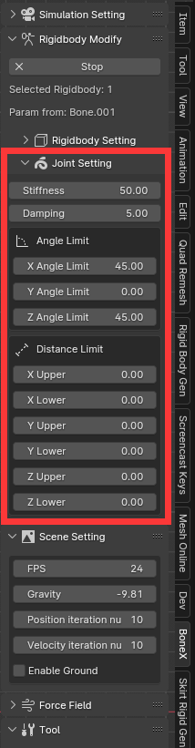

Joint
Component of Joint
Within rigid Body modification interface, press “C”, a rigid body will be created at position of the bone. If the bone has a parent, a joint will be created at the head of the bone to connect the parent bone, the child bone can rotate and move around the joints. The axis in the joint settings means the local axis of the bone (The local axis of the bone can be set to display in the armature properties armature->Data->Viewport Display->Axes). The center of mass of the rigidbody will be fixed at the tail of the bone, so the behavior of collision as a single rigidbody will be a bit strange without a parent bone.
Joint between two rigidbody can be seen as a spring, two rigidbody is connected by spring force.
Joint Properties
Stiffness: determine the stiffness of the spring.
Damping: determine the damping of the spring.
Angle Limit: hard constraint that limit the rigidbody relative rotation.
Distance Limit: hard constraint that limit the rigidbody relative movement.
Hard constraints: the distance constraints and angle constraints set in the panel. This is the constraint range you tell physx should not exceed. If too much force pushes him away from the hard constraint range, it will be subject to a large reaction force trying to return.
Soft constraints: The springs connecting rigidbodies can be called soft constraints, that is, the stiffness and damping in the panel. It represents that the rigidbodies will be affected by the spring within the range of hard constraints.